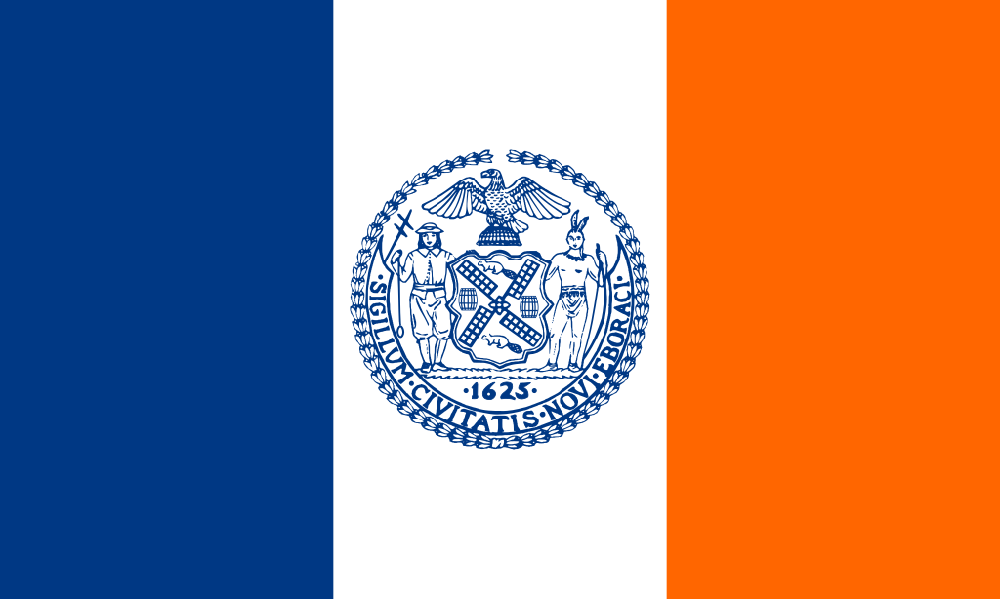
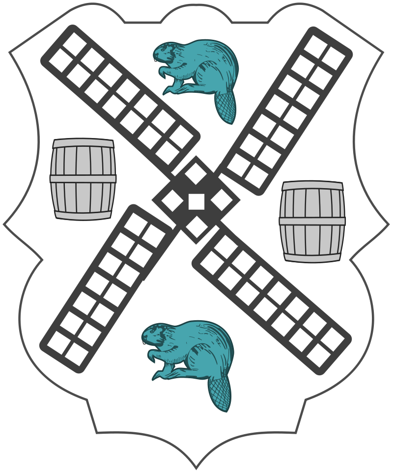

Bienvenido a Nueva York
Introducción
Nueva York incluye 5 distritos que se ubican donde el rio Hudson desemboca en el oceano Atlantico. En su centro se encuentra Manhattan, un distrito densamente poblado que se encuentra entre los principales centros comerciales, financieros y culturales del mundo. Sus sitios iconicos incluyen rascacielos, como el Empire State Building, y el amplio Central Park. El teatro Broadway se ubica en la zona del Times Square iluminada con neones.
Alcalde: Bill de Blasio
Poblacion (1 de julio de 2018): Puesto 1.º
Coordenadas: 40°40'N 73°56' / 40.67, -73.94
Para conocer mas sobre Nueva York haga click en el siguiente enlace.
NEW YORK
BANDERA Y ESCUDO

